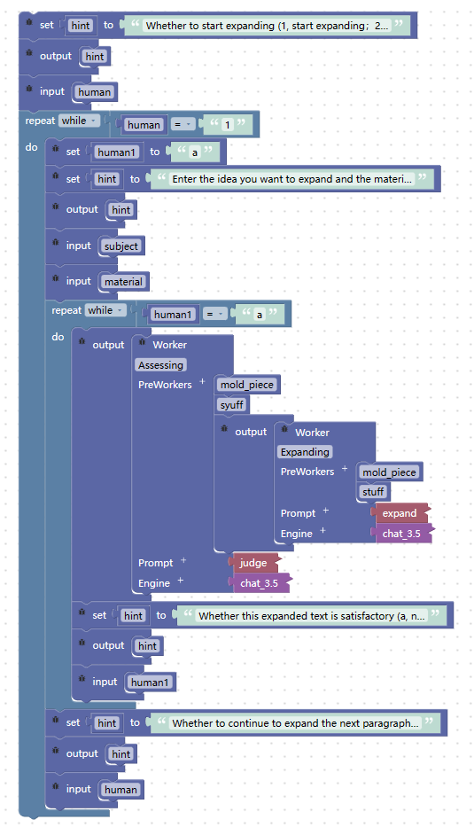

Wen Xiao Jie-- AI-Powered Personalized Long Articles
Unlock the Power of AI for Tailored, Engaging Content that Resonates with Your Audience!
1 APPLICATION SCENARIO AND TARGETED END USERS
We first discuss the application scenarios, targeted end users and their needs for Wen Xiao Jie.
1.1 Application Scenarios and Targeted End Users
Creators: Creators need to generate persuasive and engaging text to convey their ideas and stories, attracting readers' attention and appreciation.
Academics: Academics require diverse texts to convey research findings, perspectives, and insights throughout the research process. Wen Xiao Jie meets their specific research needs and enhances both efficiency and accuracy.
General Users: General Users need to generate various types of text, such as job application letters, resumes, reports, letters, etc., to meet their work and life needs.
Content Marketers: Content marketers need to generate a large volume of brand-relevant long-form content to attract and retain audience attention, while increasing brand exposure and website traffic.
SEO Experts: SEO experts need to generate high-quality text to optimize website rankings, attract more organic traffic, and improve conversion rates.
1.2 Targeted End Users Needs
Wen Xiao Jie can meet targeted end users' demands for high-quality text generation, diversified text types, personalized customization, and easy operation, making it suitable for targeted end users in many fields.
2 APPLICATION USAGE
For the targeted end users, I have developed a software called Wen Xiao Jie, which can be utilized in the following manner.
To begin with, following Wen Xiao Jie's system prompts, the end users provide the theme, intended audience, and genre. Subsequently, Wen Xiao Jie furnishes a comprehensive article generic outline tailored to the user's specifications.

Users provide ideas and materials according to Wen Xiao Jie's prompts, and Wen Xiao Jie modifies the general outline into a personalized outline.

Once users receive the personalized outline, they divide it into modules and provide the necessary materials. Wen Xiao Jie then assists in expanding each module with relevant content, which is automatically checked to ensure that it aligns with the topic.

Next, users review the article paragraphs and if any are unsatisfactory, they select them and provide rewriting requirements to Wen Xiao Jie. Wen Xiao Jie then provides the revised paragraph, which is automatically checked to ensure that it aligns with the topic.

Finally, users can review the article for phrasing and if any unsatisfactory sentences are found, they select them and remove the unsatisfactory portion, leaving an incomplete sentence. They then provide the unsatisfactory sentence to Wen Xiao Jie, who generates a prompt based on the remaining portion of the sentence to suggest a sentence that meets the user's satisfaction.

3 EXPLORATIONS WITH LLM
Now, we describe how we learn the task knowledge from the LLM, experiment prompt effectiveness, and summarize the task challenges.
3.1 Discourse with LLM
In our discourse with LLM, we examined techniques to optimize human typing efficiency, such as extension, paraphrasing, prompts, process guidance, and grammar refinement. Additionally, we explored methods to evaluate the quality of generated text and established corresponding metrics.
3.2 Challenges
3.2.1 Difficulties of technology.
After conversing with LLM, we gained a preliminary understanding of the worker involved in becoming a Wen Xiao Jie. However, the production of such a product requires significant expertise, and my personal abilities are currently inadequate to employ traditional methods in its creation. Fortunately, Sapper's quick product building feature enabled me to overcome the technical hurdles and effortlessly implement the product's functionality.
3.2.2 Difficulties of AI-chain Design.
As these workers are predominantly associated with rewriting, it is crucial to exercise caution when connecting various workers to achieve specific functions of high quality. When constructing the AI chain, it is important to not only utilize the suggested workers provided by LLM but also take into account the individualized requirements of users during specific use cases. For instance, determine off-topic content may be necessary.
3.2.3 Difficulties of Prompt Design.
Initially, prompts were disorganized, resulting in uneven quality of LLM's responses and failure to meet user requirements. Most of the workers provided by LLM are related to rewriting, so it is necessary to carefully design and differentiate prompts so that they are all oriented towards rewriting and achieve different functions.
4 AI-CHAIN DESIGN
Next, let me introduce our AI chain design and major features.

Figure-1: AI Chain of Wen Xiao Jie
4.1 Generating an Outline
Based on the user's input of the theme, reader, and genre, the AI obtains information and expands it. Then, the AI uses the obtained information to generate a generic outline for that type of article. Next, the user inputs their writing ideas and materials for the article, allowing the AI to output a personalized outline.
4.2 Expanding the Outline
The AI receives a theme and the necessary materials, and it then integrates and expands on them. To avoid content output that does not match the user's input, we have added Assessing relevance to track and verify if the output content is consistent with the user's input. To meet individual user needs, we have also added a satisfaction function that allows users to judge whether the expanded content meets their expectations. If it does not, the AI will provide additional expanded content until the user is satisfied.
4.3 Paraphrasing a Paragraph
The user inputs a piece of text that needs to be rewritten and the requirements for rewriting it into the Paraphrasing a Paragraph worker, and then the AI performs the rewriting task. Similar to the Expanding the Outline worker the Assessing relevance function and the satisfaction function.
4.4 Completing a Sentence
The user inputs an incomplete sentence, and the AI uses association to generate a sentence that meets the user's expectations. This functionality allows for greater accuracy and personalization in the AI's output, as it takes into account the user's intended meaning and context when generating the completed sentence.
5 RAPID PROTOTYPING PROCESS
5.1 Generating an outline
5.1.1 AI chain interactive debugging
At the initial stage, the worker only had one worker, which enabled the AI to receive a set of information and generate an outline. However, the output results did not meet the general requirements of actual situations, nor did they meet the specific requirements of users. To address this issue, we adopted a step-by-step implementation approach. Specifically, we first had the AI generate a generic outline that meets the common requirements of the public, and then personalized outline to generate a general outline that meets the specific needs of users. This implementation approach is more accurate, logical, and can fully consider the balance between the needs of the public and individual users.
5.1.2 Prompt interactive debugging
Previously, when a single worker provided an outline and wrote the prompt, all information was mixed into a single paragraph, leading to frequent misunderstandings by the AI and resulting in outputs that did not meet the requirements. Now, the prompt is written in separate sections, each corresponding to a specific theme (Content Representation). For example, the first section may be "You are a... robot," the second section may be "Instruction description," and the third section may be "Context Control". Additionally, we have implemented special requirements for context control, such as: 1) ensuring uninterrupted output; 2) limiting the output to only the generic outline;3) using the specified theme, audience, and article type to generate personalized outlines. We have also defined the output format, such as "Generic outline: "+ content. These improvements have resulted in a more accurate, comprehensive, and logically clear approach to generating outlines.
5.1.3 Future Improvements
At present, the tool is more suitable for users who can clearly and specifically express their needs. For users who only have a general direction in mind, the tool may not be an ideal choice. Therefore, in future improvements, we plan to implement a function that recommends information for users who only have a general direction in mind, in order to meet the needs of a wider range of users. This improvement will help the tool better serve ordinary users, and improve its applicability and usability.
5.2 Expanding the outline
5.2.1 AI chain interactive debugging
At first, we only allowed the AI to expand articles based on the information provided by the user. However, the content generated by the AI may not match the information provided by the user, leading to a decrease in the accuracy of the article. To address this issue, we introduced the Assessing relevance (State Monitor), which can supervise the content generated by the AI and determine whether it matches the information provided by the user. This approach effectively improves the accuracy of the article and ensures that the content generated by the AI meets the user's expectations.
5.2.2 Prompt interactive debugging
At first, we allowed the AI to expand on a sentence without any accompanying "materials" information. As a result, the expanded content mostly did not meet the user's requirements. To address this issue, we have added the requirement for "materials" information (The rest similar to the "prompt interactive debugging of Generating an outline”).
5.2.3 Future Improvements
LLM had frequent misunderstandings that resulted in incorrect output because the prompts mixed all information into a single paragraph. To overcome this, we now write prompts in separate sections, with each section corresponding to a specific theme. We also provide context control and define the output format to ensure accurate and satisfactory output.

5.3 Paraphrasing a paragraph
5.3.1 AI chain interactive debugging：(Similar to Expanding the outline AI chain interactive debugging).
5.3.2 Prompt interactive debugging：(Similar to Generating an outline Prompt interactive debugging).
5.4 Completing a sentence
Prompt interactive debugging:(Similar to Generating an outline Prompt interactive debugging).
6 USER EXPERIENCE WITH SAPPER
The use of sapper greatly reduces the technical difficulty of developing applications like Wen Xiao Jie and increases my development efficiency. Sapper is an AI integrated development environment (IDE) designed for non-computer professionals, supporting no-code programming and graphical drag-and-drop development. It functions like an AI production line, enabling people to develop various AI applications quickly, providing fast services to society, and bringing immeasurable market and economic value. Sapper can better integrate AI into people's lives, enhance their work efficiency, and promote local economic growth.